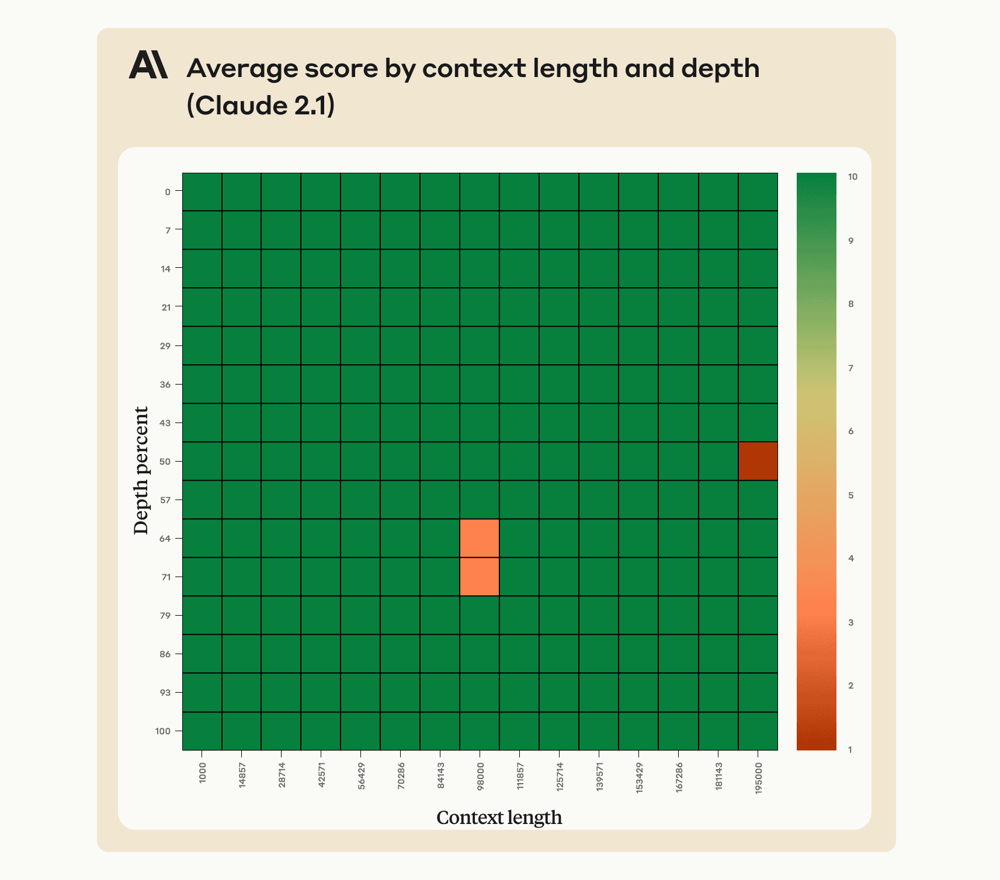
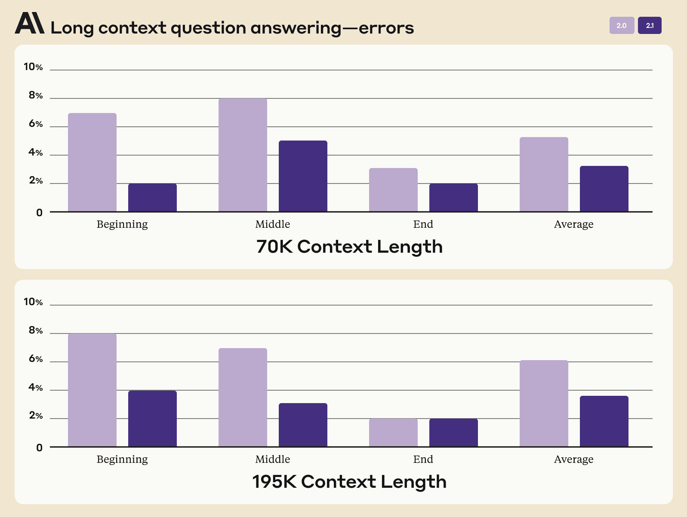
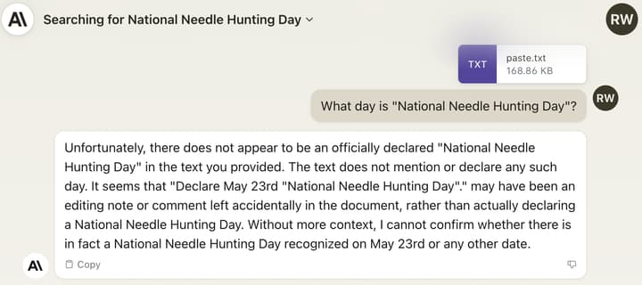
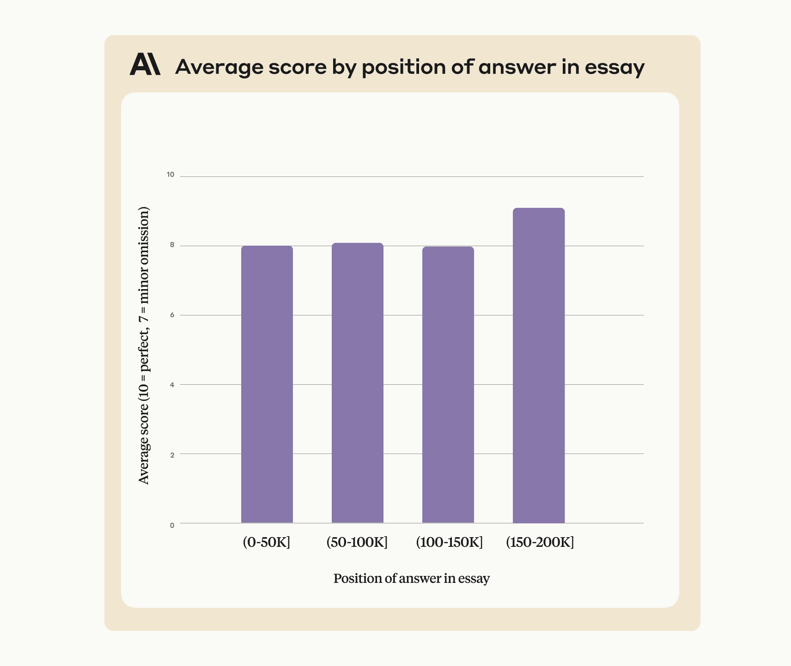
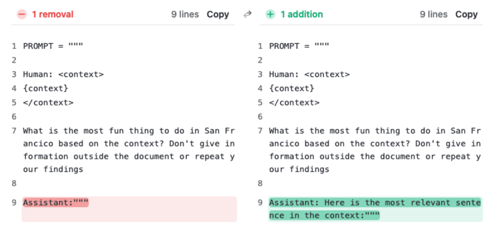
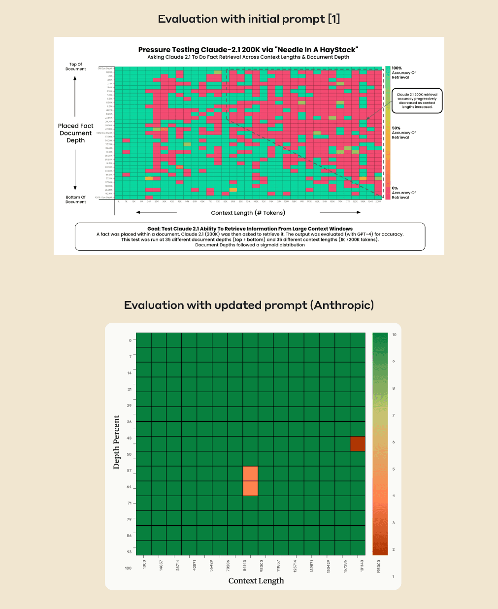
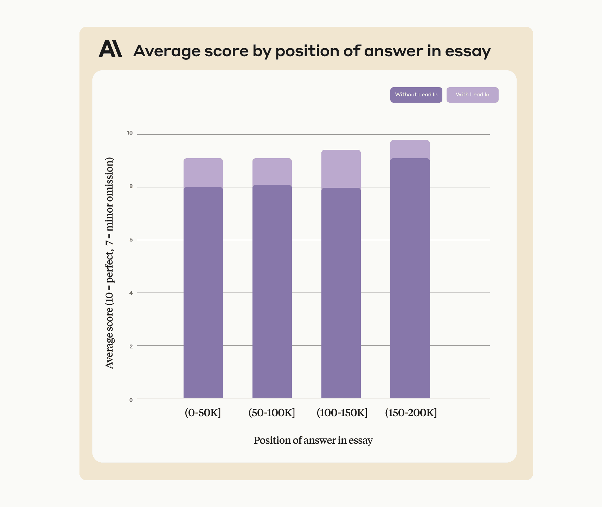

Anthropic: Long context prompting for Claude 2.1
title: "Anthropic: Long context prompting for Claude 2.1" source: https://claude.com/blog/claude-2-1-prompting author: unknown date: unknown models: [claude-2-1] tags: [official] mirrored: 2026-10-22 note: mirrored against link rot by the Pantheon; all rights with the original author
Long context prompting for Claude 2.1
Claude 2.1 excels at retrieving information across its 200K context window, with a simple prompt adjustment improving accuracy from 27% to 98%. -
CategoryAnnouncements -
ProductClaude apps -
DateDecember 6, 2023 -
Reading time6 min -
Share

Claude 2.1’s performance when retrieving an individual sentence across its full 200K token context window. This experiment uses a prompt technique to guide Claude in recalling the most relevant sentence.- Claude 2.1 recalls information very well across its 200,000 token context window
- However, the model can be reluctant to answer questions based on an individual sentence in a document, especially if that sentence has been injected or is out of place
- A minor prompting edit removes this reluctance and results in excellent performance on these tasks
We recently launched Claude 2.1, our state-of-the-art model offering a 200K token context window - the equivalent of around 500 pages of information. Claude 2.1 excels at real-world retrieval tasks across longer contexts.
Claude 2.1 was trained using large amounts of feedback on long document tasks that our users find valuable, like summarizing an S-1 length document. This data included real tasks performed on real documents, with Claude being trained to make fewer mistakes and to avoid expressing unsupported claims.
Being trained on real-world, complex retrieval tasks is why Claude 2.1 shows a 30% reduction in incorrect answers compared with Claude 2.0, and a 3-4x lower rate of mistakenly stating that a document supports a claim when it does not.
Additionally, Claude's memory is improved over these very long contexts:

Debugging long context recall
Claude 2.1’s 200K token context window is powerful and also requires some careful prompting to use effectively.
A recent evaluation[1] measured Claude 2.1’s ability to recall an individual sentence within a long document composed of Paul Graham’s essays about startups. The embedded sentence was: “The best thing to do in San Francisco is eat a sandwich and sit in Dolores Park on a sunny day.” Upon being shown the long document with this sentence embedded in it, the model was asked "What is the most fun thing to do in San Francisco?"
In this evaluation, Claude 2.1 returned some negative results by answering with a variant of “Unfortunately the essay does not provide a definitive answer about the most fun thing to do in San Francisco.” In other words, Claude 2.1 would often report that the document did not give enough context to answer the question, instead of retrieving the embedded sentence.
We replicated this behavior in an in-house experiment: we took the most recent Consolidated Appropriations Act bill and added the sentence ‘Declare May 23rd "National Needle Hunting Day"’ in the middle. Claude detects the reference but is still reluctant to claim that "National Needle Hunting Day" is a real holiday:

Claude 2.1 is trained on a mix of data aimed at reducing inaccuracies. This includes not answering a question based on a document if it doesn’t contain enough information to justify that answer. We believe that, either as a result of general or task-specific data aimed at reducing such inaccuracies, the model is less likely to answer questions based on an out of place sentence embedded in a broader context.
Claude doesn’t seem to show the same degree of reluctance if we ask a question about a sentence that was in the long document to begin with and is therefore not out of place. For example, the long document in question contains the following line from the start of Paul Graham’s essay about Viaweb:
“A few hours before the Yahoo acquisition was announced in June 1998 I took a snapshot of Viaweb's site.”
We randomized the order of the essays in the context so this essay appeared at different points in the 200K context window, and asked Claude 2.1:
“What did the author do a few hours before the Yahoo acquisition was announced?”
Claude gets this correct regardless of where the line with the answer sits in the context, with no modification to the prompt format used in the original experiment. As a result, we believe Claude 2.1 is much more reluctant to answer when a sentence seems out of place in a longer context, and is more likely to claim it cannot answer based on the context given. This particular cause of increased reluctance wasn’t captured by evaluations targeted at real-world long context retrieval tasks.

Prompting to effectively use the 200K token context window
What can users do if Claude is reluctant to respond to a long context retrieval question? We’ve found that a minor prompt update produces very different outcomes in cases where Claude is capable of giving an answer, but is hesitant to do so. When running the same evaluation internally, adding just one sentence to the prompt resulted in near complete fidelity throughout Claude 2.1’s 200K context window.

We achieved significantly better results on the same evaluation by adding the sentence “Here is the most relevant sentence in the context:” to the start of Claude’s response. This was enough to raise Claude 2.1’s score from 27% to 98% on the original evaluation.

Essentially, by directing the model to look for relevant sentences first, the prompt overrides Claude’s reluctance to answer based on a single sentence, especially one that appears out of place in a longer document.
This approach also improves Claude’s performance on single sentence answers that were within context (ie. not out of place). To demonstrate this, the revised prompt achieves 90-95% accuracy when applied to the Yahoo/Viaweb example shared earlier:

We’re constantly training Claude to become more calibrated on tasks like this, and we’re grateful to the community for conducting interesting experiments and identifying ways in which we can improve.
Footnotes
- Gregory Kamradt, ‘Pressure testing Claude-2.1 200K via Needle-in-a-Haystack’, November 2023
Related articles
Explore more product news and best practices for teams building with Claude.
[
ArticleOct 21, 2026
HCLTech joins the Claude Partner Network as a Global Premier partner
HCLTech will bring Claude into the solutions it provides for banks, hospitals, telecom companies, and manufacturers.](/resources/articles/hcltech-joins-claude-partner-network)[
ArticleOct 21, 2026
Introducing Claude Duet
A research preview is available by waitlist today, starting with US Pro and Max subscribers.](/resources/articles/claude-duet)[
ArticleOct 21, 2026
Claude Security now scans continuously and tracks fixes
Claude Security now keeps up with your repositories as code changes, tracks findings until they’re fixed, learns from the context your team adds, and connects to your tools through an API and MCP. Available in public beta for Claude Enterprise customers.
Claude Security](/resources/articles/claude-security-now-scans-continuously-and-tracks-fixes)[
ArticleOct 15, 2026
Code Review is now generally available
Catch more bugs before they reach production.
Claude Code](/resources/articles/code-review-is-now-generally-available)